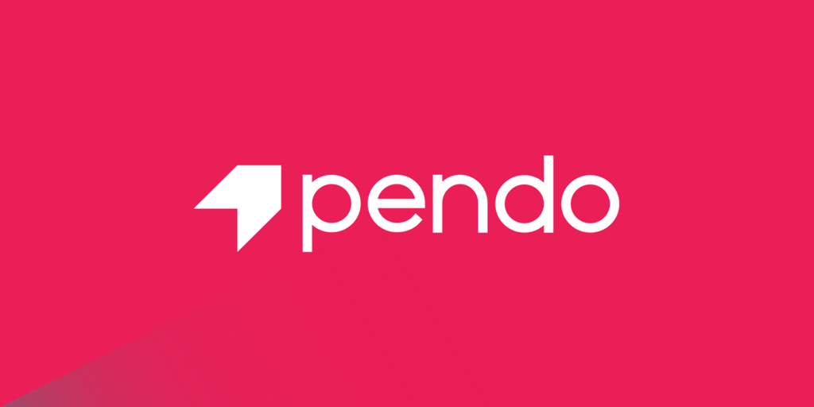

Development Resources
- TLDR- A collection of simplified and community-driven man pages.
- howdoi- Are you a hack programmer? Do you find yourself constantly Googling for how to do basic programing tasks? Suppose you want to know how to format a date in bash. Why open your browser and read through blogs (risking major distraction) when you can simply stay in the console and ask howdoi?
- Dash- Dash is an API Documentation Browser and Code Snippet Manager. Dash stores snippets of code and instantly searches offline documentation sets for 150+ APIs (for a full list, see below). You can even generate your own docsets or request docsets to be included.
- Git Kraken- The legendary Git GUI client for Windows, Mac AND Linux.
- Hyper- A terminal built on web technologies
- JetBrains- Are you learning Java, PHP, Ruby, Python, JavaScript, Objective-C or .NET technologies? Or maybe you just plan to? Do it right from the start, with award-winning professional developer tools from JetBrains. And the best part: it’s free of charge.
- Go- Go is an open source programming language that makes it easy to build simple, reliable, and efficient software.
- Firebase- Firebase is Google’s mobile platform that helps you quickly develop high-quality apps
- every-programmer-should-know - A collection of (mostly) technical things every software developer should know
- m-cli - Swiss Army Knife for macOS
- api-blueprint - A powerful high-level API design language for web APIs.
- front-end-guide - Study guide and introduction to the modern front end stack.
- Atom- At GitHub, we’re building the text editor we’ve always wanted: hackable to the core, but approachable on the first day without ever touching a config file. We can’t wait to see what you build with it.
- Electron- Build cross platform desktop apps with JavaScript, HTML, and CSS.
- Cordova- Mobile apps with HTML, CSS & JS
- React Native- A framework for building native apps using React